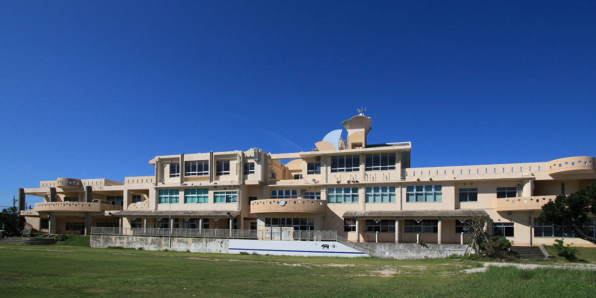

N高について
About School

IT×グローバル社会を生き抜く
"創造力"を身につけ、
世界で活躍する人材を育成する。
想像力をもった人とは、自分なりの考えをもって
主体的に行動できる人です。
私たちの考える創造力とは、新しいモノを生み出す力だけではなく、自由な発想で考え、主体性をもって問題に取り組む力を指します。インターネットが社会に広がり、私たちの生活は大きく変わりました。インターネットを活用すれば、世界中の情報は誰にでも簡単に手に入ります。情報そのものだけでは価値を生まず、その情報を元に自分なりに考え、主体的に動ける人が価値を生み出せるのです。 創造力を身につけるために、教養、思考力、実践力の三つを学びます。
教育方針
- 教 養自分なりの考えをもつための知識
- 思考力知識を使って考える力
- 実践力考えを行動に移す力


N高の魅力
ネットの高校だから
やりたい事に多くの時間を使える
N高等学校は、インターネットと通信制高校の制度を活用した新しい高校です。そのため、高校卒業のための学習にかかる拘束時間を最小限にとどめる事ができます。だから自らが学びたい事に多くの時間を充てる事ができます。
Basic Program：高校卒業資格取得のための必修授業
Advanced Program：将来に繋がる豊富な選択授業

増えた時間で
将来へ繋がる多くの経験ができる
N高では将来へ繋がるオリジナル授業であるAdvanced Program（アドバンスト プログラム）を数多く用意しております。多くの経験からやりたい事をみつけましょう。

高卒資格取得のためのBasic Program
ネットと通信制高校の制度を活用して、
一般的な全日制高校と比べ短い拘束時間で高校卒業資格を得ることが可能です。